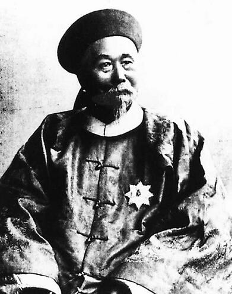

探讨李鸿章在甲午战前与战中的举措
发表于：2016.9.9
李鸿章在甲午中日战争中扮演着一个重要的角色，作为清军在这场战争中的总指挥，他肩负着保家卫国，抗击外来侵略势力的责任。但是，清朝腐败的制度和他个人的主和思想注定了他无法成为民族英雄。不仅如此，李鸿章战前采取的外交政策，战争中“避战求和”的策略等举措都被认为是“卖国”的行为。本文认为李鸿章所作出的决定虽有一部分是迫于制度与环境压力之下的无奈之举，但是，李鸿章在甲午之战前与作战时期作出的愚蠢举措又直接导致了中国的失败，因此李鸿章对甲午战败也有着不可推卸的责任。本文也将从李鸿章的举措行为来分析上述观点。许多人认为甲午战争中清朝的失败很大程度上要归咎于李鸿章的外交无能与指挥不当，李鸿章也因此被很多人认为是“卖国贼”，这也成为他一生中无法抹去的黑点。但是，当我们从当时的政治制度、错综复杂的国内外环境来看，我们又不难发现中国要在当时的历史环境下击败日本近乎是不太可能的。而将一切责任归咎于李鸿章身上是否合理呢？要想得出结论，我们有必要结合当时的历史环境，好好探讨李鸿章在甲午之战中的举措究竟是无奈之举还是估计不足导致的失误。
（一）中国在甲午战争中输给日本在甲午战争爆发的十年前已初现端倪。日本一直想找机会干涉朝鲜内政，打破清朝与朝鲜的宗主国和藩属国的关系。正好1884年朝鲜发生的 “甲申政变”为日本实施它的阴谋找到了契机。到1885年，日本代表伊藤博文以此为缘由来到中国与清方签订了《天津会议专条》，专条内容如下：1.中日两国同时从朝鲜撤兵； 2.日后朝鲜若有变乱或重大事件，两国或一国派兵，彼此应先行知照，事定仍即撤回； 3.两国均不代朝鲜练兵 。而李鸿章作为清方的签订条约代表人，却在中国占有利局势的情况下妥协了日本的阴谋诡计，签订了这一专条。这专条一签，在干涉朝鲜政治方面，日本就有了在与中国一样的权利。不得不说，这是李鸿章作出的十分错误的决定，这也为后来日本发起战争找借口埋下了伏笔。
（二）1894年朝鲜爆发了东学党起义，日本把握住了这一时机，便以此为借口开始实行它的阴谋，派兵到朝鲜“镇压”起义。而反观清朝这边，李鸿章犹豫不决，一时间不知应作出怎样的反应，出兵撤兵完全受制于日本。就在此时，袁世凯又从杉村浚口中得知日本入侵朝鲜的一些情况，殊不知已中了杉村浚的圈套。袁世凯告诉李鸿章:“杉与凯旧好,察其语意,重在商民,似无他意” 。从这句话便可以看出袁世凯作出这样的判断主要靠的是自己的直觉和主张，被日本方骗了都浑然不知，而信任他的李鸿章二话不说就听信袁世凯的报告，毫无自己的判断力，最终还是在处理朝鲜东学党起义这件事情上做出错误的决定。签订了《天津会议专条》的李鸿章也终于吃到了苦头，进退失据，这时候的李鸿章完全中了日本的圈套，让日本找到了借口发动对清朝的战争，使中国在甲午之战从一开始就陷入了被动。
甲午之战前中国外交的失败已早早的为甲午之战的落败埋下伏笔，而作为清朝外交代表人的李鸿章，一次又一次地判断失误，做出一个又一个的错误的决策，其责任不可推卸。
下一篇：浅析医药电商发展现状及未来展望
已经是第一篇了


评论区
此路不通
1楼
评论时间：2016-11-20 18:12:32
回复看来我应该多努力些才行，要不然我的博客就这么一直没有流量下去，岂不是太过于冷冷清清了？
此路不通
1楼
评论时间：2016-11-20 18:12:32
回复看来我应该多努力些才行，要不然我的博客就这么一直没有流量下去，岂不是太过于冷冷清清了？
此路不通
1楼
评论时间：2016-11-20 18:12:32
回复看来我应该多努力些才行，要不然我的博客就这么一直没有流量下去，岂不是太过于冷冷清清了？
发表评论